Muddy Points
Chapter 1: Outcomes, Events, and Sample Space
From Fall 2023
1. Why is the number of possible events \(2^{|S|}\)?
In class, we were wondering why/if \(2^{|S|}\) is the general formula for calculating the total number of possible events. We were specifically wondering if the \(2\) came from the fact that we had two options (heads and tails) for our outcome. Let’s work through the example of a 6-sided die to explain this further. The sample space is \(S=\{1, 2, 3, 4, 5, 6\}\). So is the total number of possible events \(2^6\) or \(6^6\) or something else? We can actually think about an event by using an indicator variable for each outcome of the sample space. An indicator variable is just a way to give us a yes/no answer to a question. So in this case, we are wondering: is this outcome a part of our event? If our event is \(\{1\}\) then for the outcome \(1\), the answer is “yes, the outcome is part of the event. For outcomes \(2-6\), the answer is”no, the outcome is not apart of the event.”
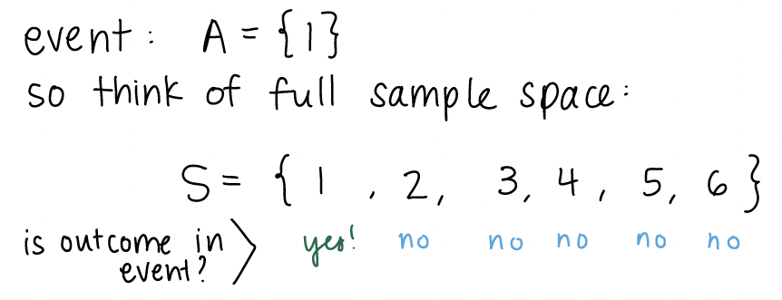
For each outcome, we have a “yes” or “no” answer. We can look at another example of an event. Let’s say our event is rolling an even number:
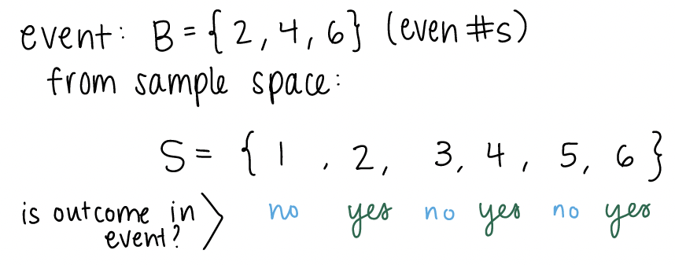
For \(2\), \(4\), and \(6\), the answer is “yes.” We can define the indicator variable for whether an outcome is in an event or not. The indicator gives a 1 or 0 for yes and no respectively.
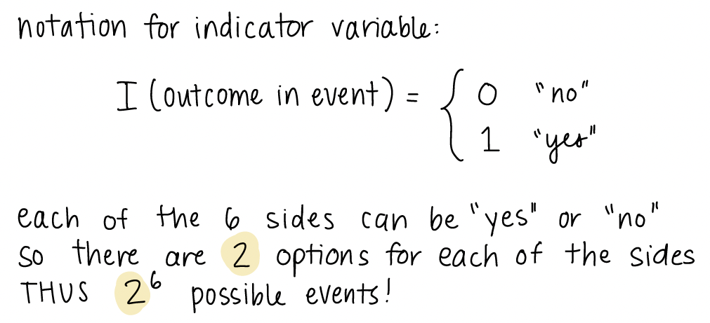
As stated above, the \(2\) in \(2^6\) comes from the \(2\) options from our indicator. Each side has two options, and there are \(6\) sides. Thus, \(2^6\) possible events.
2. What is an event??
I think this will become clearer when we start thinking about events in the context of probability. When we think of events outside of probability, we may think of something we actually do or something that happens, like going to a concert or coming to class or missing the streetcar. In this case, we think of the event as the single thing (out of all the options) that actually occured. For example, if I’m taking the streetcar to class, I can think of two definitive options of what might occur: I miss the streetcar or I get on the streetcar. Only one of these things can occur, which I may call an event colloquially.
It is important to make the distinction with events defined within probability. Events are not necessarily a single thing that occurred. Instead it can be a collection of things that may occur. In the example of the streetcar, I can define my event to include both options. Thus, my event is that I make the streetcar or I miss it. Both of these things cannot happen simultaneously, but if I want to calculate the probability that I miss or make the streetcar, then it is helpful to have the event defined.
3. Confusion on the Venn Diagram for the high blood pressure example
This is in reference to the Chapter 1 notes on “BP example variation (3/3)” slide. I explained the event that at least one subject does not have high blood pressure using a venn diagram. In this venn diagram, I assumed \(n=4\), and I wanted to show that the union of complements is equal to the complement of unions: \(\bigcup\limits_{i=1}^{n}H_i^C = \Big(\bigcap\limits_{i=1}^{n}H_i\Big)^C\).
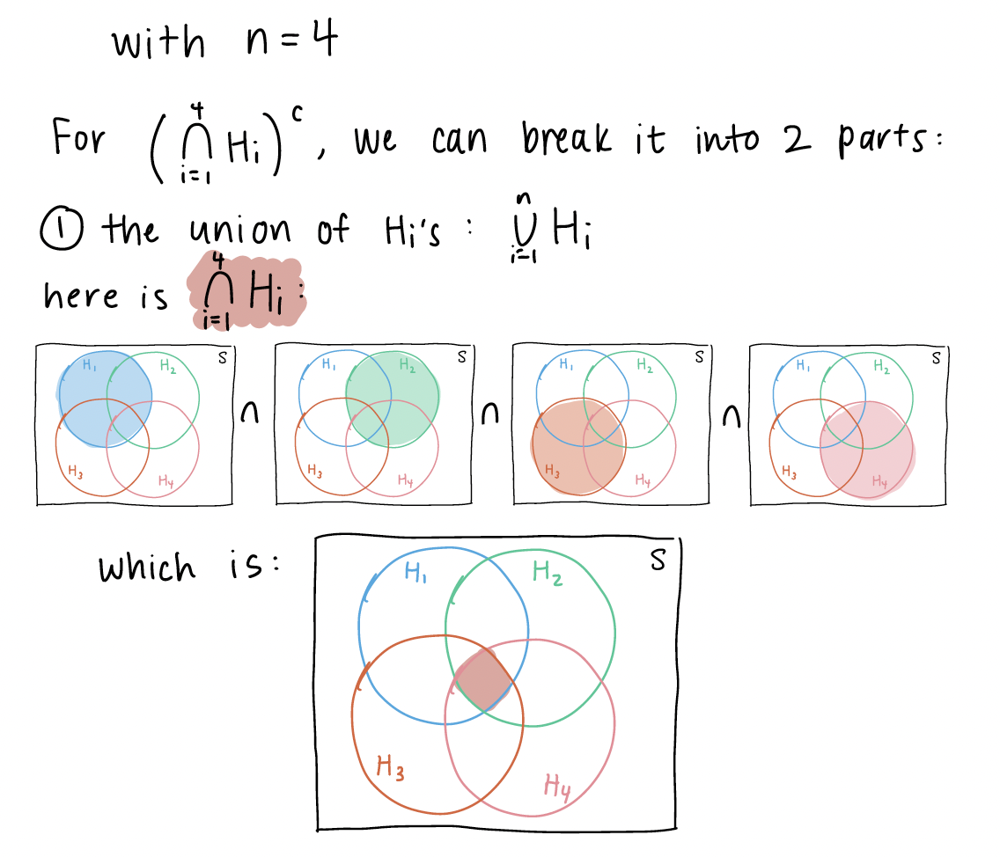
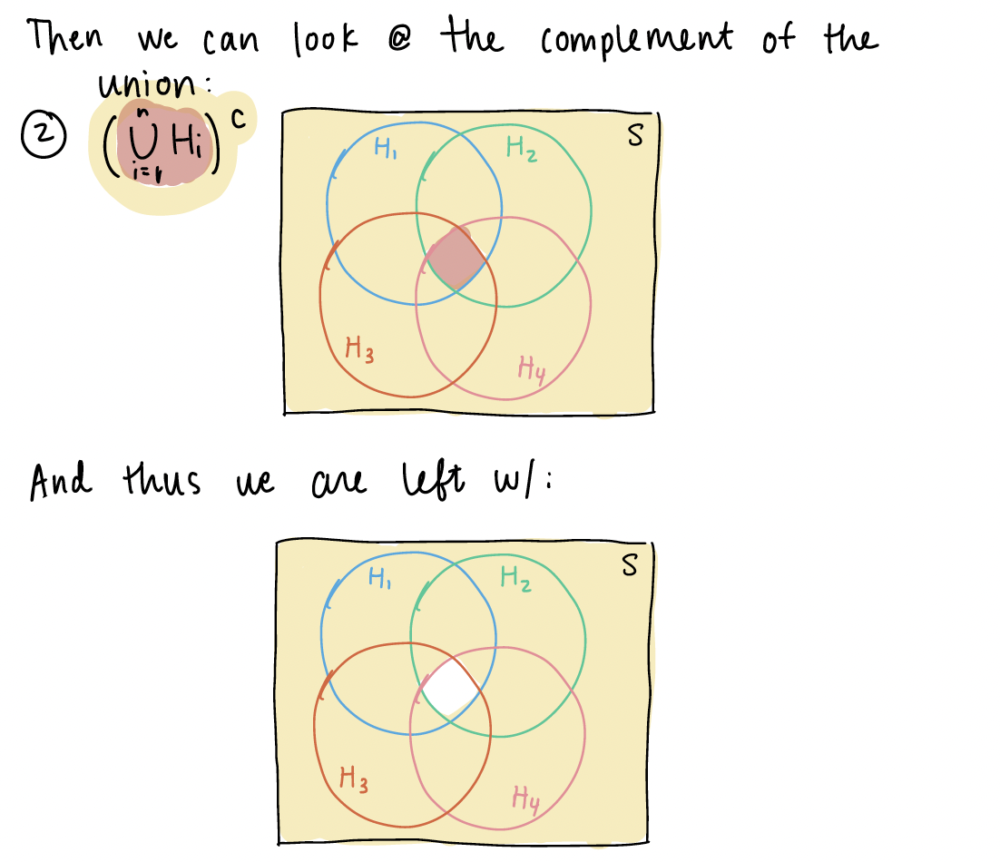 Now we can look at \(\bigcup\limits_{i=1}^{4}H_i^C\). We first need to define \(H_i^c\)
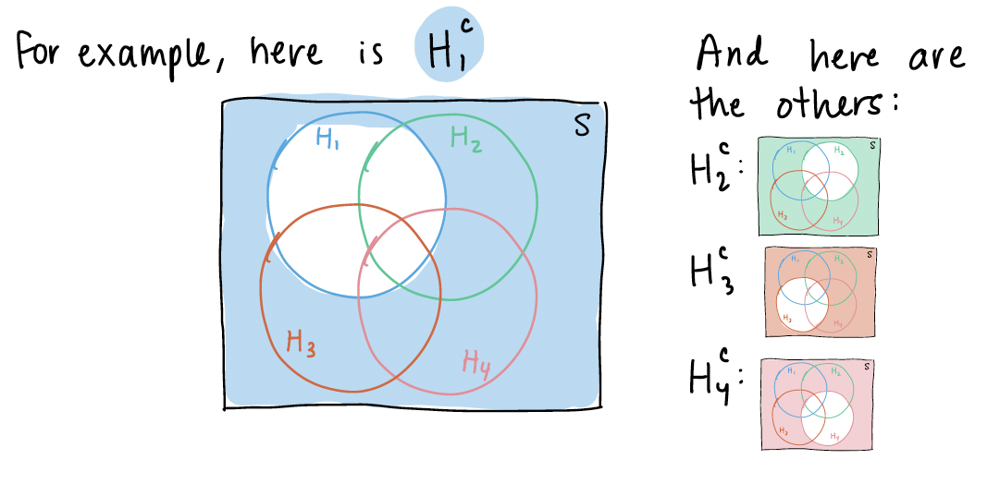
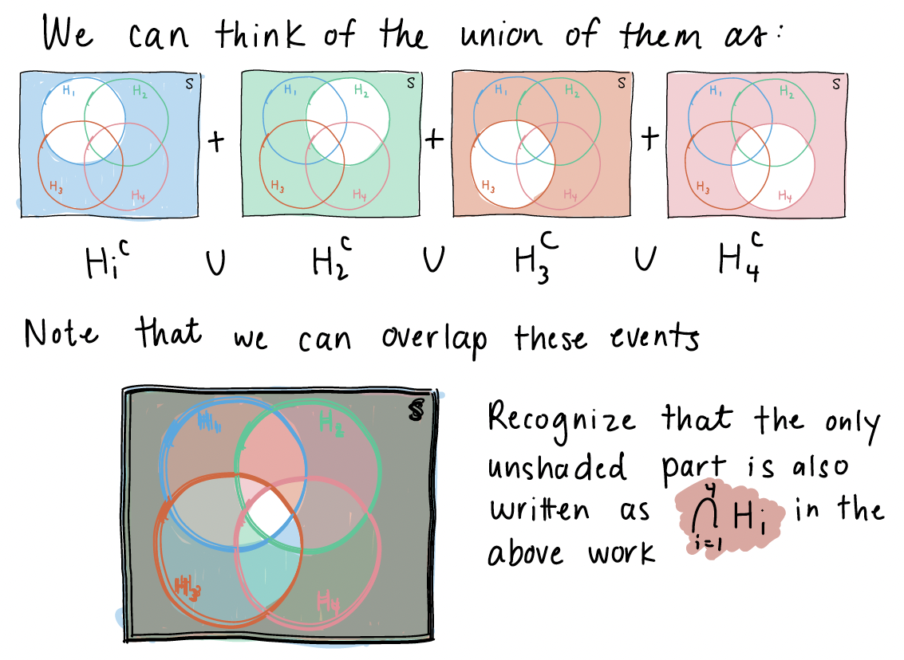
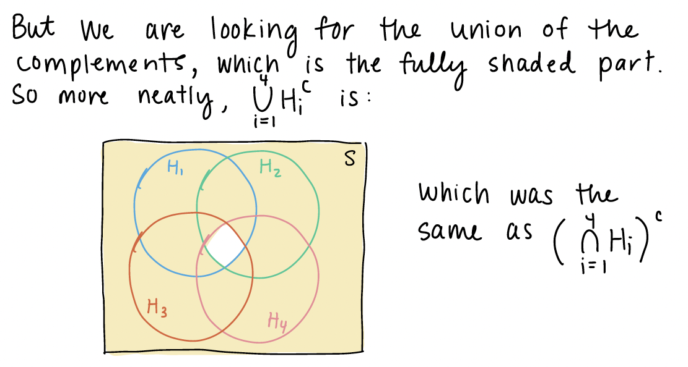
4. Proofs of propositions
Further explanations of the propositions can be found in the textbook from pages 24-27. For many of the explanations in class, I was working to produce a union of disjoint events, so that the probability could easily be calculated. Proposition 3 and 4 were specifically mentioned, so I will include some writing notes on them here:
Proposition 3
If \(A \subseteq B\), then \(\mathbb{P}(A) \leq \mathbb{P}(B)\)
In this proposition, I want to define event \(B\) as a union of disjoint events so that I can show \(P(B)\) is the sum of \(P(A)\) and some greater-than-or-equal-to 0 probability event. If the following is my venn diagram of A and B:
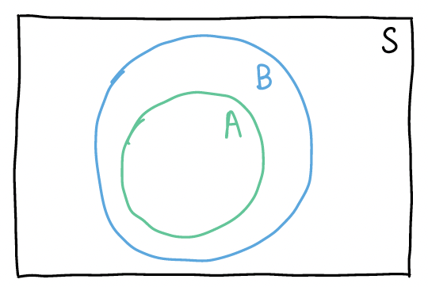
Then I can define B as the union of disjoint events: 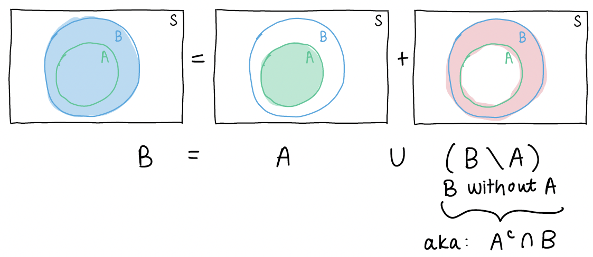
If we then take the probability of each side of the equation \(B = A \cup (A^c \cap B)\), we get \[P(B) = P\big(A \cup (A^c \cap B)\big)\]
Since events \(A\) and \(A^c \cap B\) are disjoint, the probability of their union is just: \[P(A) + P(A^c \cap B)\]
Thus, our equation is now \[P(B) = P(A) + P(A^c \cap B)\]
From Axiom 1, we know for event \(A^c \cap B\), \(P(A^c \cap B) \geq 0\).
So the probability of event B is the sum of the probability of event A and an event that is \(\geq\) 0. This means \(P(B) \geq P(A)\).
Proposition 4
\(\mathbb{P}(A \cup B) = \mathbb{P}(A) + \mathbb{P}(B) - \mathbb{P}(A \cap B)\)
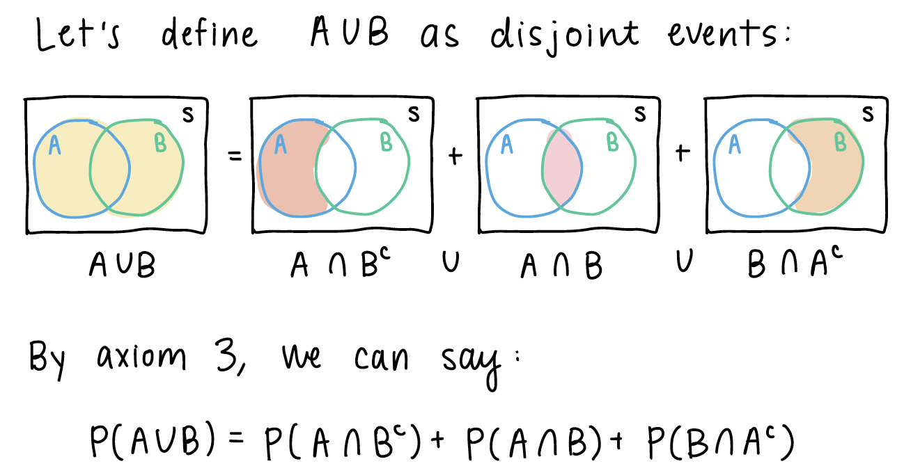
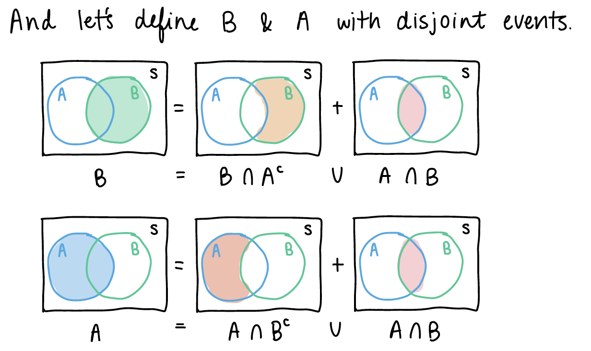
From the pictures above, we can see some similar disjoint events.
If we look back at \(A \cup B\), we can start manipulating the right side of the equation:
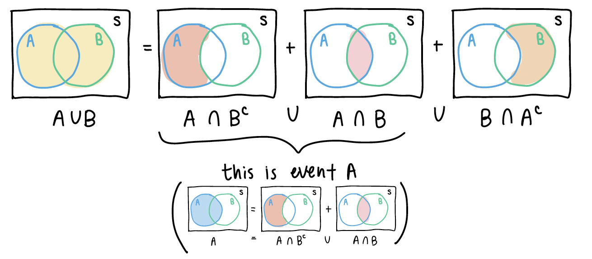
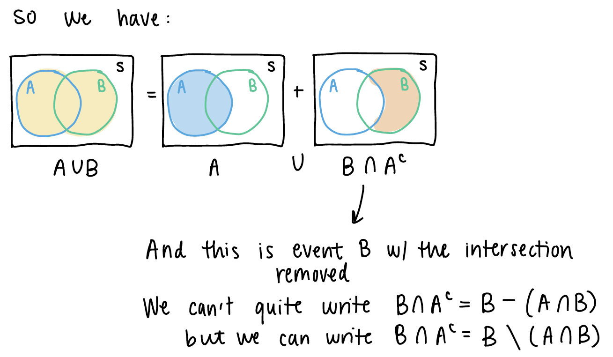 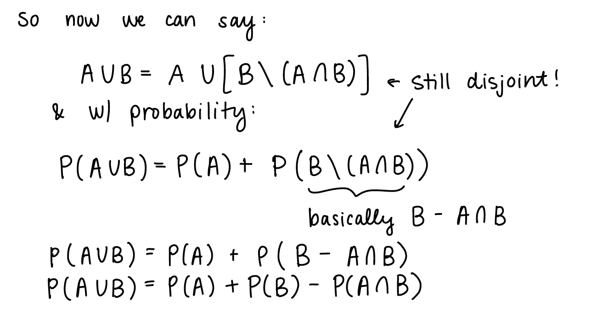
5. Example at end of Chapter 2 slides (Venn Diagram)
I will post this in the previous week’s Muddy Points as well. Please follow this link for my work through of the example. And here is the PDF with my work.
Sub-question: why don’t we just multiply the probability of A and B to get the intersection? This is a specific property of probability when A and B are independent. Only when A and B are independent can we conclude that \(P(A \cap B) = P(A)P(B)\).
6. Partition of events
We’ve been working with event partitions throughout Chapter 2, but we have not formally identified them. Partitions are advantageous to define for two reasons:
The partitions may be easier to calculate. We can then use the partitions to reconstruct other probabilities that may be more difficult to calculate
Partitions have nice properties as a consequence of being disjoint. For example, the probability of the union of partitions is the sum of the probabilities across each partition: \[P\bigg(\bigcup_{i=1}^n A_i\bigg) = P(A_1)P(A_2)P(A_3) \cdot \cdot \cdot P(A_n)\]